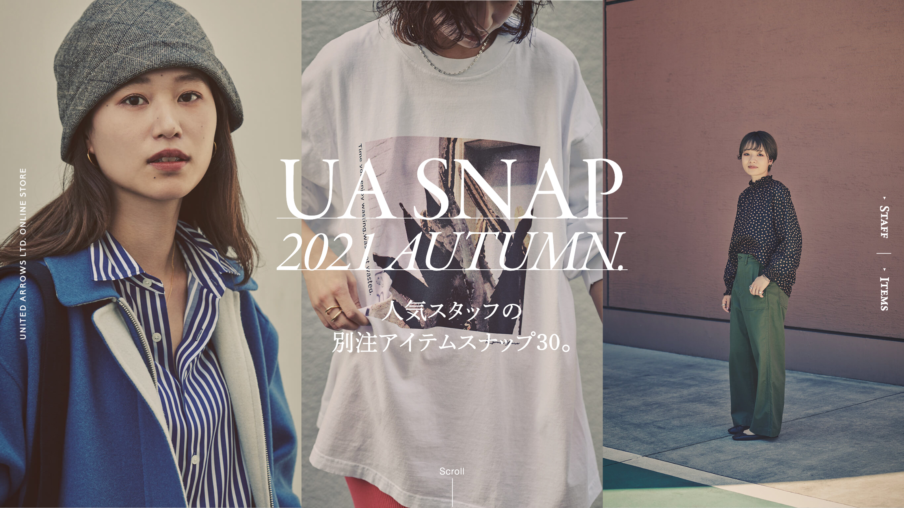
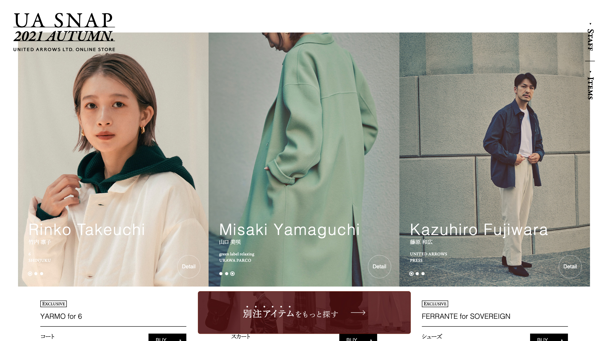
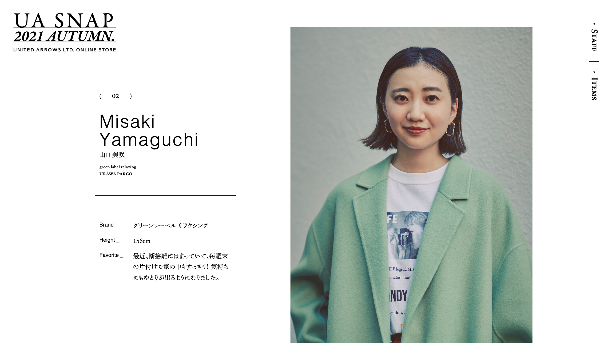
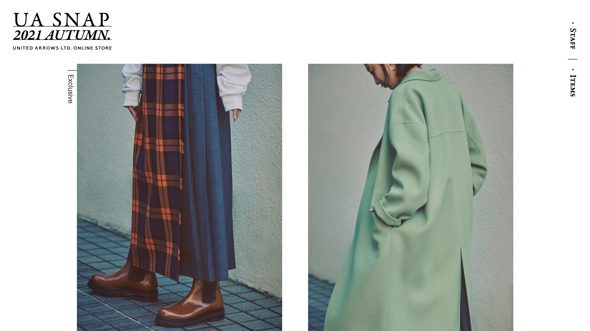
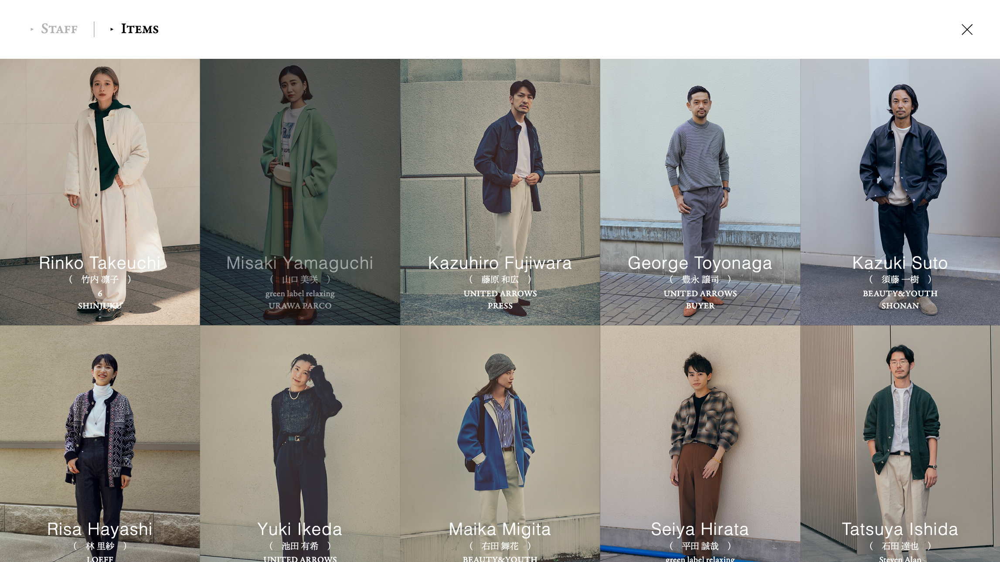
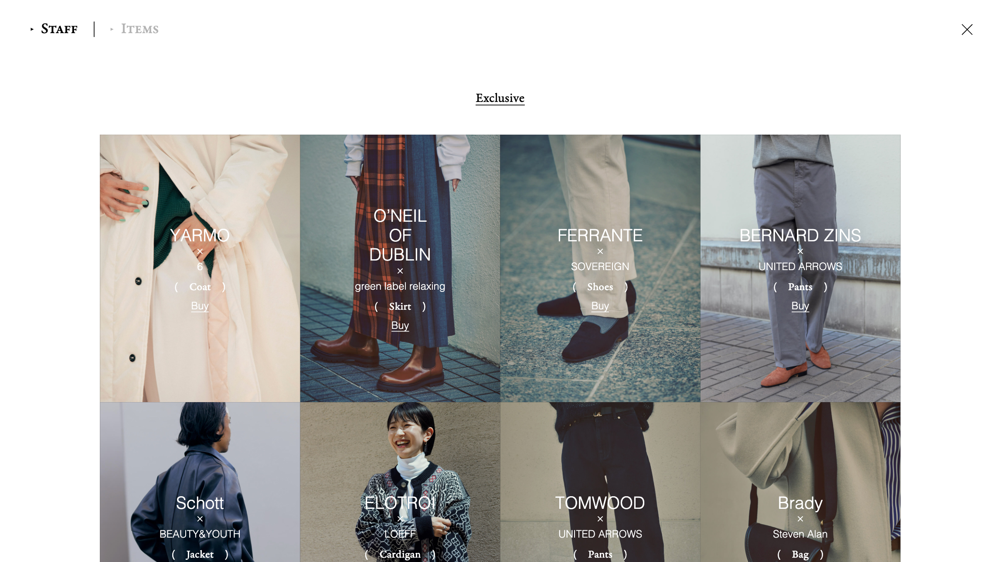

株式会社ユナイテッドアローズさまのSTAFF SNAPページの作成に携わりました。
複数ブランドの総合的なページになるので、特定のブランドのイメージに偏らないよう意識して、シンプルなデザインにしています。
また、撮影から公開まで1ヶ月と、非常にタイトなスケジュールであったため、編集からエンジニアまで含めたチーム全体に進捗を報告する機会を他の案件より細かく設けて
遅れのない進行を心がけました。
チームについて 社内：クリエイティブディレクター1人 / 編集1人 / デザイナー1人 / フロントエンドエンジニア2人


今回は特に押したい冬のアイテムを、通常アイテムとミックスしてみせる企画だったのですが
冬アイテムばかりを強く押し出したようなデザインにしてしまったため
「SNAPページらしくない」という意見が出てしまいました。
そこで、冬アイテムへの導線は追従バナーなどで強化しつつ、
ページ自体の構成はコーディネートの参考として楽しんで貰えるように、
特定の写真を大きくするような処理などを控え、
あまり特定のアイテムに偏りすぎないような構成に修正しました。



